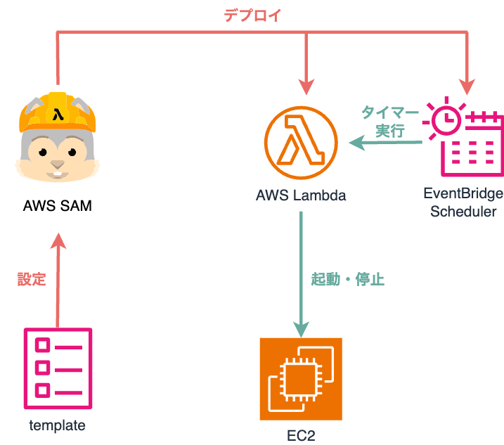

## AI で捗る AWS 運用術 ニシタニ🌀うずコワーク勉強会 --- ## 自己紹介 #### 株式会社メディス ニシタニ@keinstn - 職業 : Web デベロッパー - 仕事 : 医療系システムの開発・保守 - 趣味 : コーヒー☕ - 好きなAI : ChatGPT - 資格 : AWS SAA, AWS SAP </br> <img src="./assets/AWS-Certified-Solutions-Architect-Associate_badge.png" alt="AWS SAA" width="150px" /> <img src="./assets/AWS-Certified-Solutions-Architect-Professional_badge.png" alt="AWS SAA" width="150px" /> --- # AWS Amazon Web Service Amazon が提供する クラウドコンピューティングサービス --- ## AWS マネジメント ## コンソール ---  --- ### AWS マネジメントコンソール | Pros | Cons | | --- | --- | | 数クリックでリソースの構築が可能 | <font class="emphasis">リソースが増えると</font>操作が増える | | かっこよくて使いやすい UI | <font class="emphasis">リソースが増えると</font>画面遷移が増える | --- # IaC Infrastrucure as Code コードでインフラを管理する --- ### 勉強会のテーマが ## AI 活用事例を ## 共有しよう！ ### ということで... --- # <font class="emphasis">AI</font> x IaC <font class="emphasis">AI</font> で IaC を捗らせる --- ### 生成 AI と IaC は相性が良い！ --- ## IaC Tools - AWS CLI - AWS CloudFormation - AWS Serverless Application Model(SAM) --- ## AWS CLI AWS のリソースを コマンドラインで操作するためのツール --- ## Use Cases - 特定のタグがついている EC2 インスタンスを一括操作する - 作成日が特定の日より前の EBS スナップショットを一括削除する --- ## Usage ```bash aws <command> <sabcommand> [options] ``` インスタンス ID を指定して EC2 インスタンスの情報を取得する ```bash aws ec2 describe-instances --instance-ids i-1234567890abcdef0 ``` ```json { "Reservations": [ { "Groups": [], "Instances": [ { "AmiLaunchIndex": 0, "ImageId": "ami-0abcdef1234567890", "InstanceId": "i-1234567890abcdef0", "InstanceType": "t3.nano", "KeyName": "my-key-pair", "LaunchTime": "2022-11-15T10:48:59+00:00", "Monitoring": { "State": "disabled" }, "Placement": { "AvailabilityZone": "us-east-2a", "GroupName": "", "Tenancy": "default" }, "PrivateDnsName": "ip-10-0-0-157.us-east-2.compute.internal", "PrivateIpAddress": "10-0-0-157", "ProductCodes": [], "PublicDnsName": "ec2-34-253-223-13.us-east-2.compute.amazonaws.com", "PublicIpAddress": "34.253.223.13", "State": { "Code": 16, "Name": "running" }, "StateTransitionReason": "", "SubnetId": "subnet-04a636d18e83cfacb", "VpcId": "vpc-1234567890abcdef0", "Architecture": "x86_64", "BlockDeviceMappings": [ { "DeviceName": "/dev/xvda", "Ebs": { "AttachTime": "2022-11-15T10:49:00+00:00", "DeleteOnTermination": true, "Status": "attached", "VolumeId": "vol-02e6ccdca7de29cf2" } } ], "ClientToken": "1234abcd-1234-abcd-1234-d46a8903e9bc", "EbsOptimized": true, "EnaSupport": true, "Hypervisor": "xen", "IamInstanceProfile": { "Arn": "arn:aws:iam::111111111111:instance-profile/AmazonSSMRoleForInstancesQuickSetup", "Id": "111111111111111111111" }, "NetworkInterfaces": [ { "Association": { "IpOwnerId": "amazon", "PublicDnsName": "ec2-34-253-223-13.us-east-2.compute.amazonaws.com", "PublicIp": "34.253.223.13" }, "Attachment": { "AttachTime": "2022-11-15T10:48:59+00:00", "AttachmentId": "eni-attach-1234567890abcdefg", "DeleteOnTermination": true, "DeviceIndex": 0, "Status": "attached", "NetworkCardIndex": 0 }, "Description": "", "Groups": [ { "GroupName": "launch-wizard-146", "GroupId": "sg-1234567890abcdefg" } ], "Ipv6Addresses": [], "MacAddress": "00:11:22:33:44:55", "NetworkInterfaceId": "eni-1234567890abcdefg", "OwnerId": "104024344472", "PrivateDnsName": "ip-10-0-0-157.us-east-2.compute.internal", "PrivateIpAddress": "10-0-0-157", "PrivateIpAddresses": [ { "Association": { "IpOwnerId": "amazon", "PublicDnsName": "ec2-34-253-223-13.us-east-2.compute.amazonaws.com", "PublicIp": "34.253.223.13" }, "Primary": true, "PrivateDnsName": "ip-10-0-0-157.us-east-2.compute.internal", "PrivateIpAddress": "10-0-0-157" } ], "SourceDestCheck": true, "Status": "in-use", "SubnetId": "subnet-1234567890abcdefg", "VpcId": "vpc-1234567890abcdefg", "InterfaceType": "interface" } ], "RootDeviceName": "/dev/xvda", "RootDeviceType": "ebs", "SecurityGroups": [ { "GroupName": "launch-wizard-146", "GroupId": "sg-1234567890abcdefg" } ], "SourceDestCheck": true, "Tags": [ { "Key": "Name", "Value": "my-instance" } ], "VirtualizationType": "hvm", "CpuOptions": { "CoreCount": 1, "ThreadsPerCore": 2 }, "CapacityReservationSpecification": { "CapacityReservationPreference": "open" }, "HibernationOptions": { "Configured": false }, "MetadataOptions": { "State": "applied", "HttpTokens": "optional", "HttpPutResponseHopLimit": 1, "HttpEndpoint": "enabled", "HttpProtocolIpv6": "disabled", "InstanceMetadataTags": "enabled" }, "EnclaveOptions": { "Enabled": false }, "PlatformDetails": "Linux/UNIX", "UsageOperation": "RunInstances", "UsageOperationUpdateTime": "2022-11-15T10:48:59+00:00", "PrivateDnsNameOptions": { "HostnameType": "ip-name", "EnableResourceNameDnsARecord": true, "EnableResourceNameDnsAAAARecord": false }, "MaintenanceOptions": { "AutoRecovery": "default" } } ], "OwnerId": "111111111111", "ReservationId": "r-1234567890abcdefg" } ] } ``` --- ## Options | Name | Descripion | | --- | --- | | <font class="emphasis">--filter</font> | 指定した条件に一致するリソースや情報を取得するときに使用する | | <font class="emphasis">--query</font> | 必要な項目を取得するために使用する(JMSPath) | | --output | 出力結果のフォーマットを指定する | --- ## Example Name タグを持つ EC2 インスタンスの AZ, インスタンス ID, Name タグの値をテーブル形式で出力する ```bash aws ec2 describe-instances \ --filters Name=tag-key,Values=Name \ --query 'Reservations[*].Instances[*].{Instance:InstanceId,AZ:Placement. AvailabilityZone,Name:Tags[?Key==`Name`]|[0].Value}' \ --output table ------------------------------------------------------------- | DescribeInstances | +--------------+-----------------------+--------------------+ | AZ | Instance | Name | +--------------+-----------------------+--------------------+ | us-east-2b | i-057750d42936e468a | my-prod-server | | us-east-2a | i-001efd250faaa6ffa | test-server-1 | | us-east-2a | i-027552a73f021f3bd | test-server-2 | +--------------+-----------------------+--------------------+ ``` --- ## 覚えられない 😇 --- ## そこで... --- # <font class="emphasis">ChatGPT</font> OpenAI 社が提供する AI チャットサービス 無料版・有料版(定額制, API は従量課金制) --- # DEMO --- ## 覚えられないコマンドは <font class="emphasis">ChatGPT</font> に訊く --- ## AWS CloudFormation テンプレート(YAML, JSON) から AWS リソースを自動構築するサービス ---  <small><a href="https://docs.aws.amazon.com/ja_jp/whitepapers/latest/introduction-devops-aws/aws-cloudformation.html">AWS CloudFormation</a></small> --- ## Use Cases - ネットワークの構築(VPC, サブネット) - 繰り返し利用する EC2 インスタンスの構築 --- ## Example パラメータで名前を指定して EC2 インスタンスを作成する ```yaml AWSTemplateFormatVersion: 2010-09-09 Transform: 'AWS::LanguageExtensions' # 言語拡張の有効化 Parameters: # パラメータ Name: Type: String Resources: # リソース Ec2Instance: Type: AWS::EC2::Instance Properties: AvailabilityZone: aa-example-1a ImageId: ami-1234567890abcdef0 Tags: - Key: Name Value: !Ref Name # パラメータの参照 ``` --- ## Example パラメータで名前を指定して EC2 インスタンスを作成する ``` aws cloudformation deploy \ --stack-name my-new-stack \ --template-file template.yaml \ --parameter-overrides Name=MyInstance ``` --- ## YAML は人間が ## 書くものではない😇 --- ## そこで... --- # <font class="emphasis">GitHub Copilot</font> GitHub 社が提供する AI コーディング アシスタント 有料版(定額制) --- ## AI Integration with Editor - VSCode (Copilot Edits) - Neovim (avante.nvim) --- # DEMO --- ## 複雑な設定ファイルは ## <font class="emphasis">GitHub Copilot</font> で書く --- ## AWS Serverless Application Model(SAM) サーバーレスアプリケーションを構築する CLI AWS Lambda x 何か(Amazon EventBridge, Amazon SNS, etc) AWS CloudFormation の拡張 --- ## Use Cases - 特定の時間に EC2 インスタンスを起動・停止するサーバーレスアプリケーションの作成 (AWS Lambda x Amazon EventBridge Scheduler) ---  --- ## Usage プロジェクトの作成 ```bash sam init ``` ディレクトリ構成 ``` ├── __init__.py ├── hello_world │ ├── __init__.py │ └── app.py # Lambda 関数のコード ├── samconfig.toml └── template.yaml # テンプレートファイル(CloudFormation記法) ``` Lambda 関数のデプロイ ```bash sam deploy ``` --- ### コードもテンプレートも ### 生成 AI にお任せ 😇 --- ## Summary ### <font class="emphasis">生成 AI と IaC は相性が良い！</font> - 覚えられないコマンドは AI に訊く - 複雑な設定ファイルは AI で書く - サーバーレスなら AWS SAM はオススメ --- ## AI x IaC で ## 快適な AWS ライフを！ --- ### ご清聴 ### ありがとうございました ## 🌀